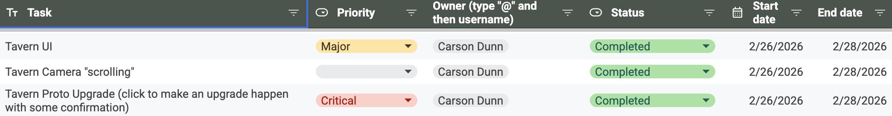
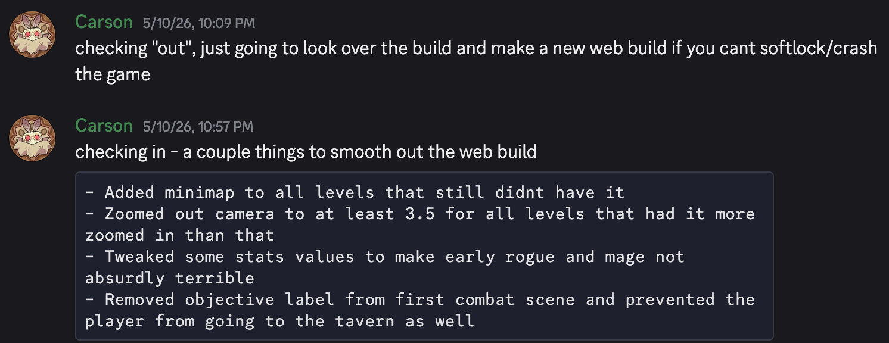
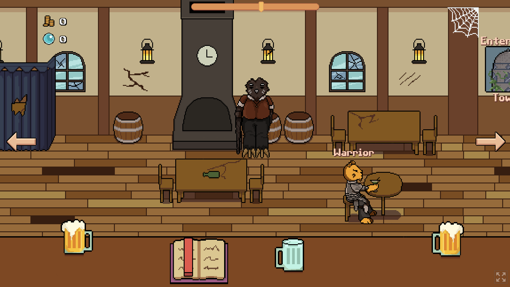
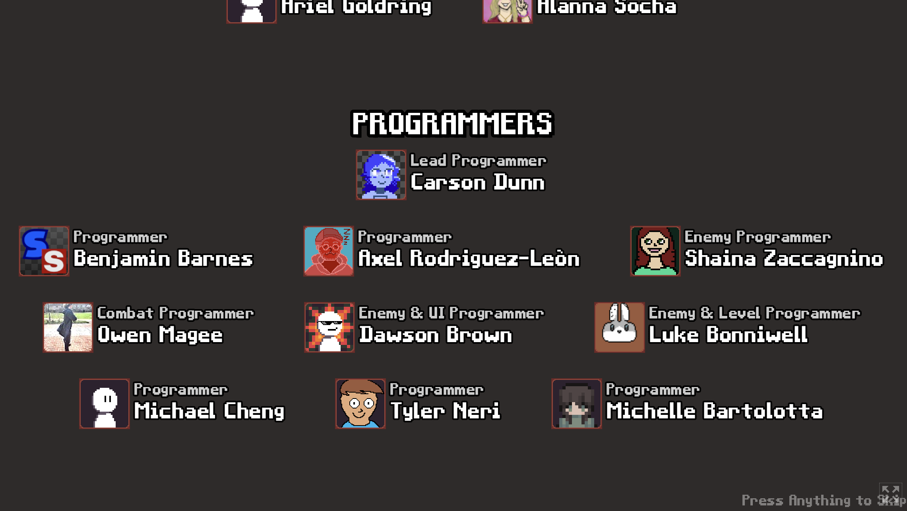

About the Game
Tails of the Tower is a hack-n-slash visual novel developed for my capstone class. I was the lead programmer, and generally an integral part for the entire development cycle of the game. We had 15 weeks as a team of 24 developers. We started from nothing and used that time to brainstorm, prototype, and complete our game.
Management
This project is fundamentally different than my other work because I was responsible for setting several precedents for the rest of my team to follow. The programming branch of this game was 10 people, including myself, so I was often on call to assist and answer any questions that they, or any other developers had.
For organization, we used the Kanban task system to keep ourselves accountable, as well as to easily find out who to ask for details on certain systems. There were over 300 tasks completed in the programming's kanban board alone. Most of the team communication outside of class occured on either a Discord server, or our weekly programmer meetings in the library.

For version control, we used Git, but specifically abided by my own check-in/check-out system to prevent any merge conflicts from occuring. Despite the high amount of work output our team had, we *never* ran into any critical merge conflicts throughout the development cycle of our game.

Because this was a capstone course, I expected a lot from my team. I wanted this game to be the best game that our college's deptartment would produce for a long time, and I think we suceeded in that. I made sure that everyone on our team had a plan for each week, asking around in a circle what they planned to work on, and giving them appropriate advice, or names to ask if they had any questions. I would also make sure to assign their Kanban tasks during this so they knew exactly what and when they had to complete their work.
My Work
On top of all of the management work, I also was programming up a storm. My work usually revolved around creating and maintaining systems, but as also tying up every loose end I could find before each playtest. Because of the nature of our game, a hack-n-slash visual novel, there were essentially two games to be developed.
Early on I put my effort to the Tavern, or where the player can upgrade their equipment, choose different classes, and talk to any visitors in the tavern. Specifically, this meant we had to have a dialogue system that could handle questions/answers as well as expressions for the NPCs you talk to. I also made the class system that saves and loads your stats for each of the three classes in our game, as well as balancing the classes and how they scale to ensure each has a uniquely fun experience from eachother. I also arranged all of the game objects inside of the tavern and created the basic tweens for all of the menus and options.

Outside of the tavern, I was responsible for creating our game's several tilemaps and creating tutorials for how to use them. When creating the tilemaps and teaching my team, I encouraged them to experiment with different sizes of levels to find out what worked and what didn't. I also created the system that chooses levels when different acts are selected. By giving the player a random level from a pool of many each time they attempt the game, we created the illusion of procedural generation which added a lot to our game.
Additionally, while not concrete code, I heavily encouraged our whole team to make sure this game was a finished product- playable from start to finish. Alongside this, I encouraged our team to make credits. Good credits. Good credits that have handmade portraits from each of the developers. That was me!

By no means is this an exhaustive list of all of my work. Outside of these larger examples, I was in and out of the game build for many hours prior to any playtest to ensure there we could get good feedback beyond "X is broken"- which we did! Please feel free to ask about anecdotes or further work on this project!